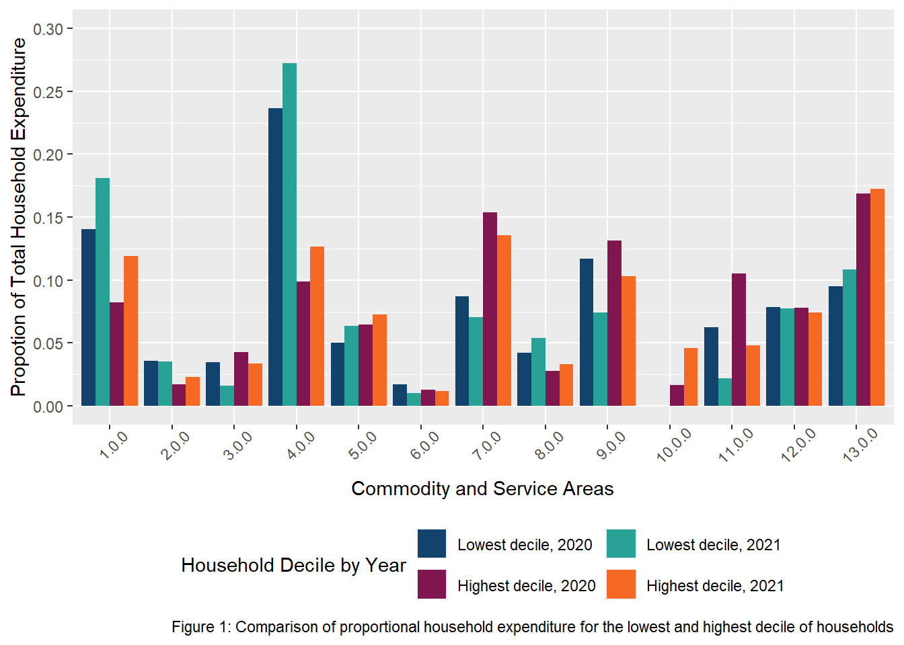

Module 10: Data Science for Policy: Changes to Household Spending
How has proportional household spending changed for the highest and lowest deciles of households?
Report Headlines:
- Both the highest and lowest decile of households surveyed experienced large increases (>0.025) in proportional household spending in the Food & Drinks (COICOP 1.0.0), and Housing, fuel & power (COICOP 4.0.0).
- Both the highest and lowest decile of households surveyed experience large decreases (>0.025) in proportional household spending in Transport (COICOP 7.0.0), Recreation & Culture (COICOP 9.0.0) and Restaurants & Hotels (COICOP 11.0.0)
- The highest decile of household also experience large increases (>0.025) in proportional household spending in Education (COICOP 10.0.0)
Report Summary
This project will explore and identify changes to household spending between 2020 and 2021, focusing on the changes to proportional household expenditure to different Commodity and Service Areas, similar to those reported in the COICOP. Specifically, this project will focus on those households which represent the highest and lowest gross income deciles, surveyed as part of the Living Costs and Food Survey. With these being selected to understand the similarities and differences in spending between households with such a disparity in income.
To understand the changes in spending between 2020 and 2021, an exploratory data analysis (EDA) was conducted. Where it was decided that comparisons could only be effectively made between deciles through converting gross spending on services to percentile proportions. Since although a gross spending increase of £100 would be equal if comparing changes in gross spending, this £100 change would likely represent a difference in proportion of available gross income for both deciles, resulting in an overall different interpretation when examining these household deciles. Therefore through converting gross spending to a percentage (dividing total gross income by each Commodity or Service area), comparisons can be made effectively.
Once manipulated and cleaned, data was visualized so relationships between households by year could be assessed. With assessments primarily being drawn from Figure 1 (below), which presents this information by Commodity and Service Area.
Commodity and Service Areas:
- 1.0.0: Food & Non-alcoholic drinks
- 2.0.0: Alcoholic drinks, tobacco & narcotics
- 3.0.0: Clothing & Footwear
- 4.0.0: Housing, fuel & power
- 5.0.0: Household Goods & Services
- 6.0.0: Health
- 7.0.0: Transport
- 8.0.0: Communication
- 9.0.0: Recreation & Culture
- 10.0.0: Education
- 11.0.0: Restaurants & Hotels
- 12.0.0: Miscellaneous goods & services
- 13.0.0: Other expenditure
The changes which can be seen can be grouped into shared or differing changes to the highest and lowest deciles Although no formal statistical analysis has been conducted, the following subsections will highlight in more detail the changes seen.
Differing Proportional Household Changes
The two main differing proportional household changes relate to Alcoholic drinks, tobacco & narcotics (COICOP 2.0.0) and Education (COICOP 10.0.0). The differences between the highest and lowest deciles, relate to the proportional movement for each of these Commodity and Service Areas. For Alcoholic drinks, tobacco & narcotics, a small decrease is seen for the lowest deciles (<0.001), whilst the highest decile presents an increase (<0.01). Although the reason for this difference should not be speculated, this presents an interesting disparity, which should be research further.
Additionally, one of the most notable differences relates to Education. Where, the lowest decile at in both 2020 and 2021, spends approximately nothing on educational fees. This is understandable, given that Education is a combination of private education tuition fees and school trips. With tuition fees not being requested from the lowest decile and school trips being cancelled or limited due to the COVID pandemic. As a result the large (>0.025) increase which can be observed for the highest decile, is understood. However, further research should be conducted to understand how this differs from previous years, when school trips were available.
Impact
These findings, although not formally supported, could propose that as a whole, the cost of living is rising uniformly. Typically being indiscriminate about the households it impacts. However as can be seen by the differences in magnitude when evaluating expenditure decreases between these deciles, there is a more significant reduction in proportional expenditure for the lowest income when examining those Commodity and Service Areas which could be considered luxuries, such as Clothing & Footwear (3.0.0), Recreation & Culture (9.0.0) and Restaurants & Hotels (11.0.0). In theory meaning that the lowest decile of household are more inclined to reduce their spending on what they could consider luxuries in order to deal with the cost of living rises seen.
The issue here is that the decline is clearly unsustainable, as many of these luxuries for the lowest decile are already approaching 0% of household expenditure, meaning that if core Commodity and Service Areas such as Food & Non-alcoholic drinks (1.0.0) and Housing, fuel & power (4.0.0) continue to rise households in the lowest decile will be unable to keep up.